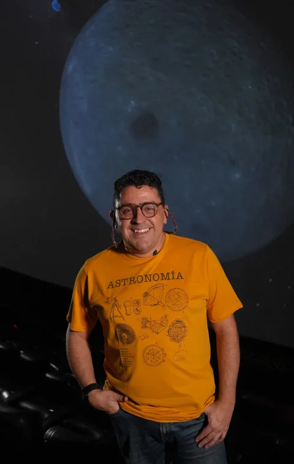

Cloud Academy
Interactive bubble-chamber visualizer for elementary particle tracks. Hover tracks to identify muons, pions, electrons, and more from their shape and curvature.
Open app →A research group at the Institute of Physics, Universidad de Antioquia (Medellín, Colombia).
Since 2009, SEAP has been dedicated to research in planetary sciences and Earth sciences. It is officially a division of FACom (Computational Physics and Astrophysics), also based at the Institute of Physics. Both groups were founded by Jorge I. Zuluaga (lead developer). Undergraduate and graduate students have passed through the group over the years; some of them appear among the contributors and collaborations on this site.
We develop computational tools and educational resources for planetary science, celestial mechanics, astrobiology, and related areas of astrophysics. Most of our work is published as open-source software on GitHub under the seap-udea account. This site highlights our most relevant repositories, papers, and interactive apps.

Full Professor, University of Antioquia · Lead developer of SEAP
Physicist and PhD in Physics, senior lecturer and researcher in astrophysics and astrobiology.
His work combines research in planetary science and astrobiology, high-performance scientific software and computing, and science communication in astronomy and physics. He has led research groups, projects, and academic programs — including the undergraduate program in Astronomy and diplomas in astronomy and physics — and has published on exoplanets, exomoons, planetary magnetic fields, orbital dynamics, and meteoroids.
Most of the open-source software published under seap-udea was created or curated by him for teaching, research, and public outreach.
Browser-based simulations hosted on this site. More apps can be added under
apps/ and published with the same GitHub Actions workflow.
Interactive bubble-chamber visualizer for elementary particle tracks. Hover tracks to identify muons, pions, electrons, and more from their shape and curvature.
Open app →Interactive visualization of light and matter around black holes. Explore how spacetime curvature bends light paths and shapes what an observer can see.
Open app →Loading featured repositories…
Collaboration forks under seap-udea — projects developed with partners and then mirrored or extended by the group.
Loading forked repositories…
Peer-reviewed articles, preprints, and software citations listed in SEAP and forked-repo READMEs.
Loading papers…
People who contribute to SEAP projects, plus owners of upstream repositories we have forked.
Loading collaborations…